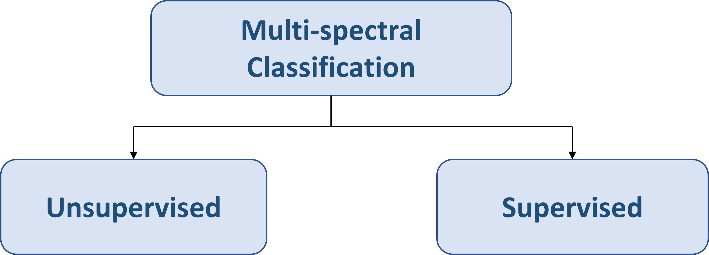
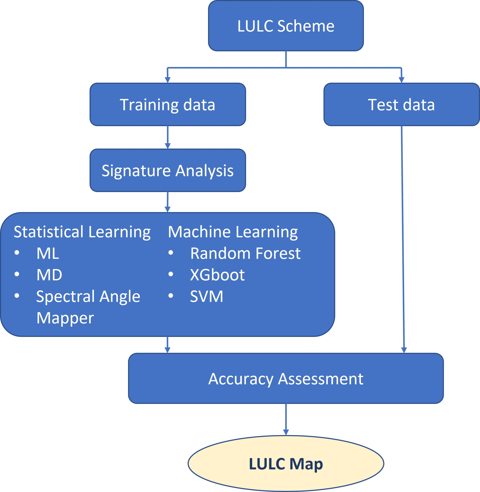
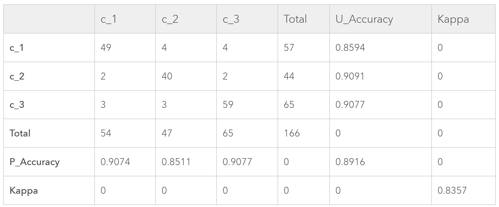

Content
Urban Land Cover Classification
Unsupervised Classification Methods
Supervised Classification Process
Classification Accuracy Metrics
School of Computing and Information Systems,
Singapore Management University
2025-03-23
Urban Land Cover Classification
Unsupervised Classification Methods
Supervised Classification Process
Classification Accuracy Metrics
The process of assigning a pixel (or groups of pixels) of remote sensing image to an urban land cover class.
Unsupervised Classification in which the computer assigns pixels to categories with no instructions from the image analyst.
Supervised Classification in which the image analyst provides training-site information that the computer uses to assign pixels to categories.

The goal of unsupervised classification is to automatically segregate pixels of a remote sensing image into groups of similar spectral character.
Classification is done using one of several statistical routines generally called “clustering” where classes of pixels are created based on their shared spectral signatures.
Clusters are split and /or merged until further clustering doesn’t improve the explanation of the variation in the scene.
Partitioning clustering approach.
Each cluster is associated with a centroid (center point).
Each point is assigned to the cluster with the closest centroid.
Number of clusters, K, must be specified.
The basic algorithm is very simple
The clustering process starts by randomly assigning objects to a number of clusters. The objects are then successively reassigned to other clusters to minimize the within-cluster variation, which is basically the (squared) distance from each observation to the center of the associated cluster. If the reallocation of an object to another cluster decreases the within-cluster variation, this object is reassigned to that cluster.
The ISODATA algorithm has some further refinements by splitting and merging of clusters (JENSEN, 1996).
Clusters are merged if either the number of members (pixel) in a cluster is less than a certain threshold or if the centers of two clusters are closer than a certain threshold.
Clusters are split into two different clusters if the cluster standard deviation exceeds a predefined value and the number of members (pixels) is twice the threshold for the minimum number of members.
The ISODATA algorithm is similar to the k-means algorithm with the distinct difference that the ISODATA algorithm allows for different number of clusters while the k-means assumes that the number of clusters is known a priori.
Number of clusters: 10 to 15 per desired land cover class.
Convergence threshold: percentage of pixels whose class values should not change between iterations; generally set to 95%.
Maximum number of iterations: ideally, the convergence threshold should be reached. Should set “reasonable” parameters so that convergence is reached before iterations run out.
k-means and ISODATA clustering work best for images with clusters that are spherical and that have the same variance. This is often not true for remote sensing images. For example, a cluster with “desert” pixels is compact/circular. A “forest” cluster, however, is usually more or less elongated/oval with a much larger variability compared to the “desert” cluster. While the “desert” cluster is usually very well detected by the k-means algorithm as one distinct cluster, the “forest” cluster is often split up into several smaller cluster. The way the “forest” cluster is split up can vary quite a bit for different starting values and is thus arbitrary.
Supervised training is closely controlled by the analyst. In this process, you select pixels that represent patterns or land cover features that you recognize, or that you can identify with help from other sources, such as aerial photos, ground truth data, or maps. Knowledge of the data, and of the classes desired, is required before classification.
By identifying patterns, you can instruct the computer system to identify pixels with similar characteristics. If the classification is accurate, the resulting classes represent the categories within the data that you originally identified.

Maximum likelihood classification assumes that the statistics for each class in each band are normally distributed and calculates the probability that a given pixel belongs to a specific class. Unless you select a probability threshold, all pixels are classified. Each pixel is assigned to the class that has the highest probability (that is, the maximum likelihood). If the highest probability is smaller than a threshold you specify, the pixel remains unclassified.
The discriminant function, described by Richards and Jia (2006), is calculated for every pixel as:
The minimum distance technique uses the mean vectors of each endmember and calculates the Euclidean distance from each unknown pixel to the mean vector for each class. All pixels are classified to the nearest class unless a standard deviation or distance threshold is specified, in which case some pixels may be unclassified if they do not meet the selected criteria.
The distance is calculated for every pixel in the image, assigning the class of the spectral signature that is closer, according to the following discriminant function (adapted from Richards and Jia, 2006):
The Spectral Angle Mapping calculates the spectral angle between spectral signatures of image pixels and training spectral signatures. The spectral angle θ is defined as (Kruse et al., 1993):
Therefore a pixel belongs to the class having the lowest angle, that is:

The basic principle for all accuracy assessment is to compare estimates with reality, and to quantify the difference between the two.
A confusion matrix (or error matrix) is usually used as the quantitative method of characterising image classification accuracy. It is a table that shows correspondence between the classification result and a reference image. I.e., to create the confusion matrix we need the ground truth data, such as cartographic information, results of manually digitizing an image, field work/ground survey results recorded with a GPS-receiver.
KAPPA analysis is a discrete multivariate technique used in accuracy assessments.
It yields a Khat statistic (an estimate of KAPPA) that is a measure of agreement or accuracy.
The Khat statistic is computed by using the formula below:
Rating criteria of Kappa statistics
The goal of a good image analysis is, of course, to have a large number of True Presences, and a small number of False Presences and a small number of False Negatives.
To quantify how well the image analysis succeeded in this, the value typically calculated is called the F1 score, which is calculated as:
Richards and Jia (2006) Remote Sensing Digital Image Analysis: An Introduction, Springer.